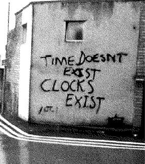

«Жизнь коротка, искусство вечно». Вечен и интерес к искусству, его идеям и принципам.
Манифест — письменное изложение литературных или художественных принципов, выражение мнения, содержащее программу. Манифест, как источник информации и форма выражения творческих идей и принципов, закрыт для людей. Тексты трудны для понимания, их сложно найти без знания их существования.
Мы стремимся, чтобы тексты стали доступны людям.
Мы хотим видеть больше концептуально проработанных проектов.
Мы считаем, что тексты, не должны ставить своей главной и единственной целью продать продукт или услугу.
Мы считаем, что чтение манифестов помогает качественно писать собственные тексты, проводить глубокие исследования интересующего культурного поля.
Наше текущее понимание культуры чтения и написания творческих текстов привело нас к созданию архива манифестов.
Веб-сервис собирает тексты и делает доступными для людей.
Кроме того, проект стремится развить культуру осознанного подхода к написанию поясняющих текстов, которые в перспективе помогут создавать более концептуально проработанные творческие проекты.
Наш архив хранит в себе множество материалов и текстов. Попадая в архив, становится ли текст старым? А не попадая в архив, может ли он состариться? Можно ли манифест, чьи идеи популярны сегодня, называть старым? Есть ли временные границы у идей? Что модно, а что старо_модно? Давая эти характеристики, имеет ли значение время, когда был создан описываемый объект?
Архив манифестов all times не ставит никаких границ, не вешает ярлыков, не присваивает выдуманных названий. Он опирается на фактические даты, вбирает их все, создавая вневременное пространство, где хранятся нетленные идеи.
На самой платформе вневременной характер отражён не только в названии, но и в часах, помогающих перемещаться по манифестам разных годов.
Также, концепция отражается и в функциональных частях сайта. Иконки подсказки и заметки располагаются на каждой странице манифеста и могут появиться в абсолютно разных местах страницы (теперь только иконка подсказки перемещается по всему экрану -- создаются некие границы между текстом и заметками и блоком доп информации). Так, они заполняют собою всё пространство, продолжая идею об отсутствии границ. Также, их внезапное размещение схоже с мыслью или идеей человека, которая может появится абсолютно внезапно и где угодно.
Появление этих функциональных единиц на странице создаётся немой диалог не только пользователя с нами, но и пользователя с самим собой, так как тексты в заметках отражают идеи самого человека, появившиеся в момент прочтения идей другого человека. Так, мы открываем ещё один слой диалога пользователя с автором материала, который он изучает.
Подсказки, в свою очередь, или расширяют полученную информацию, или продолжают ветвь поиска пользователя, отсылая на другие материалы и ресурсы.